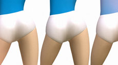

Lulu Li
Eine der Volksaufklärung und -gesundheit dienende Figur der Kulturrevolution wandelt sich zum Sexsymbol. Eine Auseinandersetzung mit dem Wandel der chinesischen Gesellschaft durch den zunehmenden Einfluss westlicher Werte.
Gewinner des Bloom-Wettbewerbs von onedotzero und MTV, London. (Mit freundlicher Genehmigung)
Chinese Message | London 2008
Die Feiern zum 60. Jahrestag der Volksrepublik auf dem Tiananmen-Platz in Bildern des Staatsfernsehens CCTV werden neu arrangiert und hinterfragen Propagandatechniken und die eigene Wahrnehmung.

Untiteled (3 Legs) | Peking 2011
Uraufführung
This work is an exploration of the uncanny notion of femininity. It is an exploration of aesthetics, at the same time it is an exploration of sexuality. Within the distinctive female form the complex sexual gesture signifies what is beyond the language. To quote Judith Butler: "Sexuality is becoming." – Lulu Li
Lulu Li wurde 1972 in der Provinz Shandong geboren, wo sie auch aufwuchs und an der Fakultät für bildende Kunst der Liaocheng Universität studierte. Mitte der 90er-Jahre verlegte sie ihren Wohnsitz nach Peking, wo sie seither, mit Arbeitsaufenthalten in Shanghai und Kuala Lumpur, lebt und arbeitet. 2009 begann sie ein Studium an der Master Class des Chelsea College of Art in London. Ihre Abschlussarbeit gewann 2010 den "Gilbert de Botton Prize For Emerging Art". Seither pendelt sie zwischen ihren Ateliers in Peking und London.